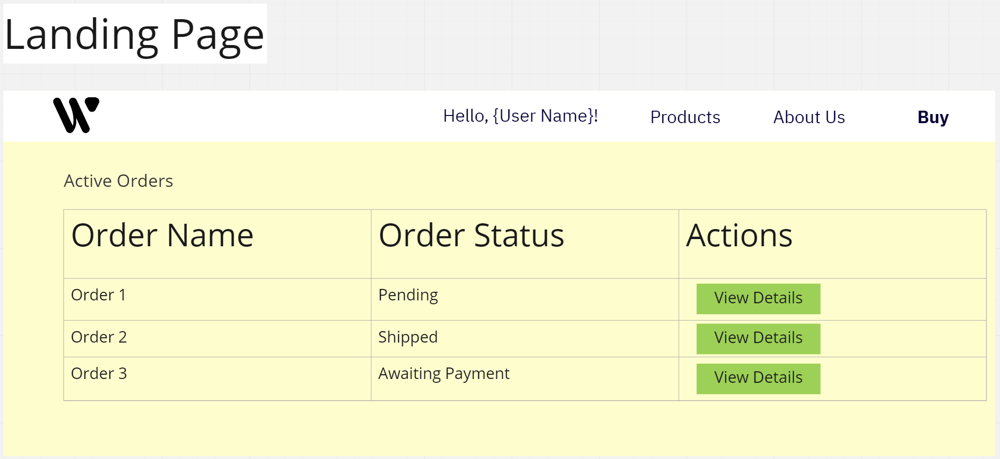
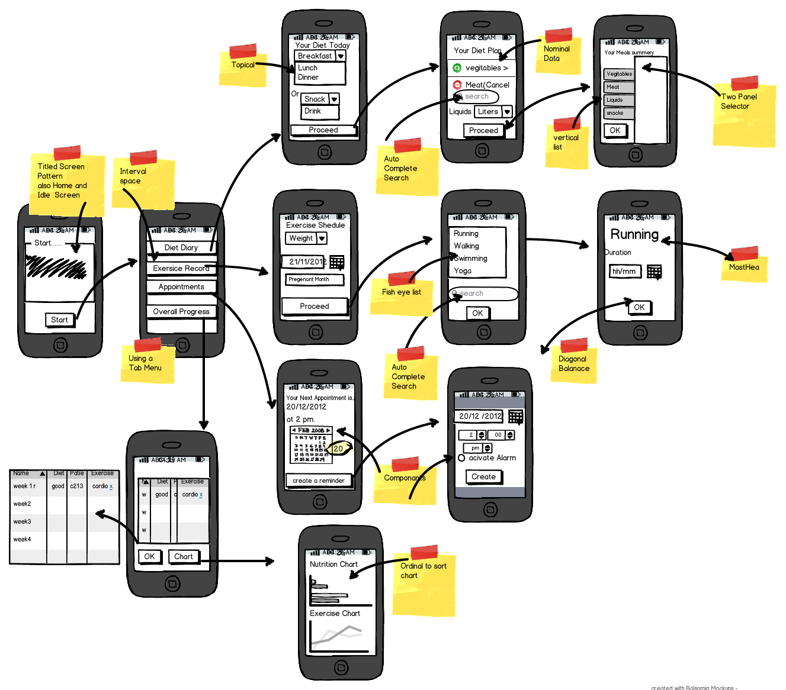
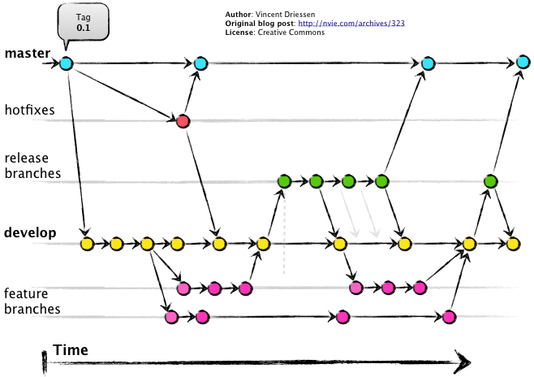

## Wireframes and Shared Git Practices </br> #### Key topics for tonight <div style="text-align: left;"> - Wireframes and Storyboarding </br> - Collaborative Git Practices and `Gitflow` </br> - Expectations for weekly meetings </br> </div> --- ## Wireframes <div style="text-align: left; font-size: 1.75rem"> Simplistic visual User Interface (UI) representations for a particular software system feature. </div>  --- ## Wireframes (cont) #### Things to focus on <div style="text-align: left; font-size: 1.75rem"> - Keep your wireframe simple. - Focus on clearly presenting the layout of the page. - What actions can the user take on the page? - What data is viewable and where? - Questions that a wireframe will assist in answering. - "Is this the ideal layout for the page?" - "Should this page have more or less functionality?" - "Is the workflow within this page clear?" </div> --- ## Wireframes - Demo #### Additional References <div style="text-align: left; font-size: 1.75rem"> - [Example Ecommerce Website Wireframe](https://moqups.com/templates/wireframes-mockups/ecommerce-wireframe/) - [Adobe Wireframe examples](https://xd.adobe.com/ideas/process/wireframing/wireframe-examples-websites-mobile-apps/) </div> --- ## Storyboarding <div style="text-align: left; font-size: 1.75rem"> Taking our established wireframes and estbalishing <span style="color: cadetblue">workflows</span> within our system. This sometimes is explored through the concept of a <a href="https://careerfoundry.com/en/blog/ux-design/how-to-define-a-user-persona/">User Persona</a>. </div> --- ## Storyboarding (cont)  --- ## Storyboarding (cont) #### Things to focus on <div style="text-align: left; font-size: 1.75rem"> - Focus on how the various parts of your system fit together. - Identify any actions that need to be take to change between parts of the storyboard. - Questions that a wireframe will assist in answering. - "Is our proposed workflow addressing all of the user's needs?" - "Is there a more efficient workflow (can we minimize clicks?)" </div> --- ## Storyboarding - Demo #### Additional References <div style="text-align: left; font-size: 1.75rem"> - [Wireframe vs storyboard vs mockup vs prototyping](https://www.visual-paradigm.com/guide/ux-design/wireframe-vs-storyboard-vs-wireflow-vs-mockup-vs-prototyping/) - [Difference between Wireframe and Storyboarding](http://www.differencebetween.net/technology/difference-between-wireframe-and-storyboard/) </div> --- ## Collaborative Git Practices <div style="text-align: left; font-size: 1.75rem"> When working in a shared code project under one git repository, all developers must interact with the repository in a similar way to prevent confusion and chaos in the codebase. </div> --- ## Collaborative Git Practices (cont) #### Git Branches / Merges <div style="text-align: left; font-size: 1.75rem"> - <span style="color: cadetblue">Shared Branch</span> - A branch that is meant to be utilized by all members of the team. Expectations on code quality for these branches should be high (unit tests / manual tests are run) as it can impact other developers ability to work on their task. - <span style="color: cadetblue">Feature Branch</span> - A branch that is either tied to a feature, task, proof of concept, or some other pending work item. These branches won't impact other developers until it is merged into a shared branch. </div> --- ## Git Branches / Merges #### Demo - [Ryan's GitMerging Example](https://github.com/RyanTheShaw/GitMergingExample) --- ## Git Branches / Merges #### Considerations <div style="text-align: left; font-size: 1.75rem"> - If you need to manually merge in changes, take your time and make sure you aren't deleting someone else's work! This is a destructive action. - Don't carelessly merge your items into a shared branch. Look over your <span style="color: cadetblue">git diff</span> and verify all your changes are in there. Manually test the application as well (automated testing is better if you can manage that). - Consider requiring a code review on merges via GitHub's pull request interface. </div> --- ## Gitflow  --- ## Gitflow #### Summary <div style="text-align: left; font-size: 1.75rem"> - The develop branch is your main shared branch, and should always be in a stable state. - Newly created work items are <span style="color: cadetblue">cut</span> from develop and named feature branches. - Once feature branches are completed, they are verified and merged back into develop. - Once you're supporting a live version of your website, the main/master branch should always be in the same state as the live website. </div> --- ## Gitflow #### Additional Resources <div style="text-align: left; font-size: 1.75rem"> - [The most popular article on gitflow of all time](https://nvie.com/posts/a-successful-git-branching-model/) </div> --- ## Goals <div style="text-align: left; font-size: 1.75rem"> - Goal 1: Have properly planned work in the backlog. - Captured in User Stories - Team has clear expectations on acceptance criteria - Visual wireframes / storyboards / mockups made where appropriate - Goal 2: Order the work items based on dependencies. - Goal 3: Assign work items and set goals as a team for the week. </div> --- ## Expectations for bi-weekly meetings (stand ups) <div style="text-align: left; font-size: 1.75rem"> - Go down the list of items in progress with each assignee identifying any blockers, or collaberative needs. - Identify what you plan to do between now and the next meeting. - Identify any dependencies between work items and try to call out any action items to organize efforts around them. </div> --- ## Questions